如何搭建一个端到端业务需求专家 Agent
来源：微信公众号 归档日期：2026-11-25 抓取状态：成功 原文字符：16173｜配图：26 张
摘要速览
- https://mp.weixin.qq.com/s/9-KVLH2D5VYmyAzbI9nFmA
核心内容
（待补充）
可执行启发
（待补充）
我的想法
（待补充）
原文沉淀

本文提出了一套已在真实业务中跑通的Agent研发闭环系统，解决AI写代码之外的串联成本瓶颈。系统通过四层架构（上下文输入层、业务专家编排层、工具执行层、反馈学习层）将需求从进入、澄清、方案、实现、CR协同、验收、发布到结项沉淀组织成自动化流程。核心创新在于设置三道质量门禁（需求澄清、技术方案、内部质量）、采用TDD驱动实现、强制反馈留痕、真实环境验证验收，并在结项时将过程经验蒸馏为长期知识。系统让Agent能基于组织好的上下文自主推进需求，人仅在关键节点确认，通过持续吸收CR评论、验收记录和人工修正形成自我成长闭环，显著减少重复性串联工作，使每个需求都成为下一次交付的知识积累。

问题：代码之外的串联成本
才是真正的瓶颈
这篇文章不讲 prompt 技巧，也不做单次 AI 写代码的 demo。它记录的是一套已经在真实业务需求上跑通的端到端链路：系统解决了什么问题、链路如何运转、哪些环节仍需要人工确认、哪些经验可以沉淀成团队方法。
AI 写代码本身已经不再是主要瓶颈。但一个业务需求从 PRD 到上线，中间要经过需求澄清、方案确认、实现、CR、验收、发布观察和结项沉淀——代码生成只是其中最标准化的一段，真正贵的是代码之外的串联成本。
每个环节 AI 都已经能参与一点，但如果这些能力只是散落在不同对话、不同工具和不同命令里，最后真正负责串起来的还是人。人要反复梳理上下文、切换平台、调用工具、判断下一步该做什么，还要决定哪些经验需要留到下一次。人工介入的频次越高，整条链路越容易被上下文切换、经验差异和时间占用拖住。
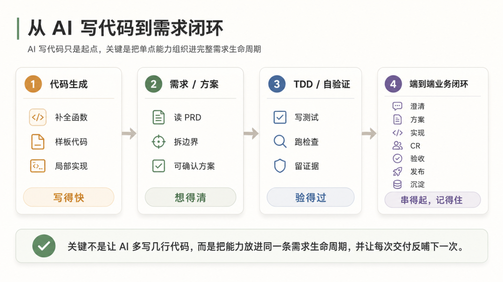
拆开来看，要解决的是三个工程化问题：
- 上下文能不能被组织起来。 需求文档、用户澄清、历史业务知识、代码事实、配置平台、日志和人的经验，原本分散在不同地方。很多时候 Agent 表现不好，不是模型不会推理，而是它拿到的上下文就不完整。
- 工具能不能被串起来。 Aone、CR、代码仓、配置平台、SLS、HSF、监控、钉钉文档等都参与研发链路，但过去需要人手动编排。每多切一次平台，就多一次上下文丢失和人工判断。
- 反馈能不能产生复利。 Agent 在澄清里问错了什么、方案里漏看了什么、CR 里反复被指出什么，如果只停留在聊天记录里，下一个需求大概率还会再犯一次。
这也是我现在更愿意把目标描述成“业务需求专家 Agent”的原因。它不是一个更聪明的代码生成器，而是把需求研发过程中的上下文、工具调用、人工确认、验收证据和反馈沉淀组织成一个闭环，尽可能把人从重复性的串联、取证和回忆里解放出来。
现在这套链路已经在真实业务需求上跑通了澄清、方案、实现、验收到结项沉淀。后面我会按“横向架构”和“纵向流程”两条线展开，重点记录这套设计背后的思考：为什么要补上下文管理、为什么要把评论和验收反馈留下来，以及这些沉淀如何反过来推动 Agent 自我成长。
总体架构：
围绕需求交付组织上下文、工具和反馈把上面的三个问题收拢，这套系统本质上是一个业务需求承接系统：它负责把上下文组织好，把工具串起来，把人工确认放在正确的位置，再把过程反馈收回来。
从静态视角看，这套系统可以拆成四层。它们不是并列模块，而是一条从事实输入、阶段判断、工具落地到反馈回收的闭环。
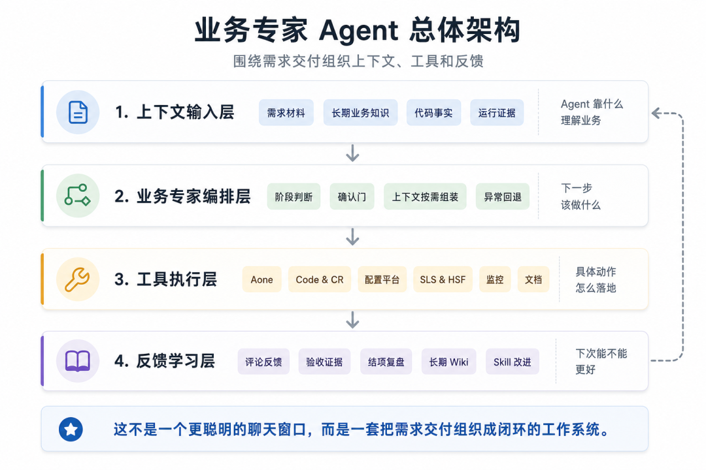
第一层：上下文输入层。 这一层回答的是“Agent 靠什么理解业务”。这里不是把所有资料一次性塞进 prompt，而是按阶段拉取和组织长期业务知识、当前需求材料、代码事实和运行证据。上下文错了，后面越努力越偏。
第二层：业务专家编排层。 这一层回答的是“下一步该做什么”。一个需求当前是在澄清阶段、方案阶段，还是已经可以实现？哪些地方必须停下来等人确认？哪些地方可以继续自主推进？遇到证据不足时，是回退补上下文，还是直接请求人工介入？这些判断如果都靠人盯着，成本很高，而且不可复现。
第三层：工具执行层。 这一层回答的是“具体动作怎么落地”。Aone、Code / CR、配置平台、SLS / HSF、监控和钉钉文档不再是一堆需要人手动切换的网站，而是可以按阶段调用的能力。
第四层：反馈学习层。 这一层回答的是“下次能不能更好”。CR 评论、issue 对话、验收记录、自恢复日志和人工修正，如果只留在过程里，需求结束就蒸发了。结项时需要把稳定知识沉淀到长期 wiki / codemap，把反复出现的流程问题变成 skill / prompt 改进候选，把一次性材料留在归档里。没有这一层，系统就是无状态的，每个需求都得从零开始。
这套方案本身不绑定特定平台，核心仍然是 skill 的组合编排和提示词设计。落地时选择 Multica，是因为它在几个关键基础设施问题上降低了成本：独立 issue 工作区带来上下文隔离，Agent 与 skill 绑定减少每次手动拼装，多运行时和沙箱让需求可以持续推进，不依赖本地开发机在线。
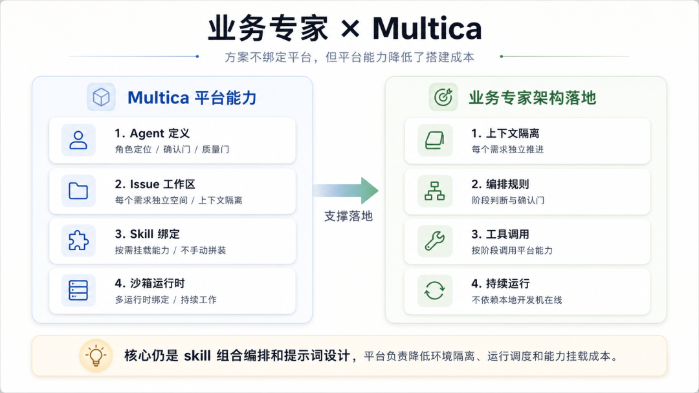
纵向闭环：
一个需求如何被业务专家承接前面的四层架构是静态的能力地图，回答的是"系统由什么组成"。接下来要回答的是"一个需求实际上怎么走完"。纵向流程的每个阶段都会按需调用横向各层的能力：上下文组织阶段主要在输入层工作，澄清和方案阶段依赖编排层做判断，实现和验收阶段密集调用工具执行层，而反馈学习层贯穿始终，在结项时集中兑现。
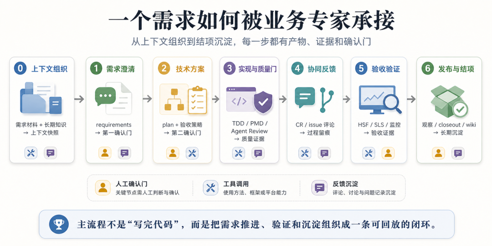
▐ 3.1 需求进入：先组织上下文
如果对应到前面的横向架构，需求进入阶段主要展开的是上下文输入层。在真正让 Agent 开始澄清或写方案之前，它需要先拿到两类已经存在的信息：
- 当前需求材料：Aone 工作项、钉钉 PRD、issue 评论、用户补充说明。这是这次需求的起点，回答的是“到底要做什么”。
- 长期业务知识：LLM Wiki、codemap、历史口径、系统边界。这部分回答的是“Agent 怎么快速理解业务”，不需要每次从零讲背景。
这两者组合起来，构成 Agent 理解需求的初始上下文快照。有了这份快照，后续才会进入澄清、建变更、拉分支、写 requirements 和 plan——这些都是流程推进中逐步产生的，不需要在进入阶段就准备齐全。
落地时，我们把上下文的管理拆成了三个仓库：代码仓库、项目记忆仓库和长期 wiki 仓库。代码仓库和项目记忆仓库都按需求拉 feature 分支，长期 wiki 始终在 master 上。需求进入时，Agent 从长期 wiki 加载业务知识；需求推进过程中，requirements、plan、progress、CR 评论、验收证据这些过程材料在项目记忆的 feature 分支上持续积累；结项时，再从这些过程材料里筛选出稳定的业务知识，蒸馏回长期 wiki。
这个设计的关键在于"不直接升级"：项目过程中产生的事实先留在项目记忆层，只有经过结项审视和人工确认，才会选择性地进入长期知识。这样既避免了噪声污染长期 wiki，也保证了每次结项都能沉淀出真正有复用价值的业务知识。这个闭环的右侧——结项时如何蒸馏和回收——在 3.8 展开。
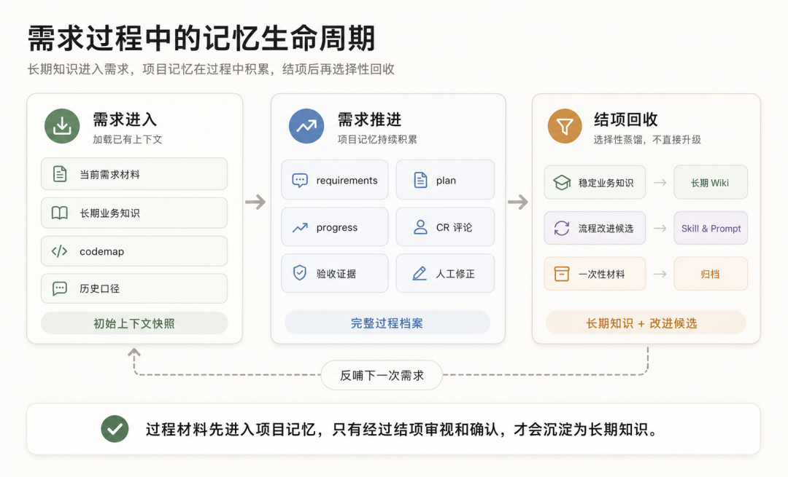
落地时，背后会用到 superai-memories、superai-aone、dingtalk-doc-rw 等能力来完成上下文拉取和组织。但在这一节里，重点不是展开这些能力各自怎么实现，而是讲清楚：Agent 开始工作前，需求材料和长期业务知识必须先到位。起点歪了，后面每一步都在放大偏差。
这一阶段的产出是一份可继续工作的上下文快照：当前需求是什么，相关历史是什么。正常情况下不需要人工确认；只有事实源缺失或需求材料冲突时，才停下来让人补充。
▐ 3.2 需求澄清：第一质量门
有了初始上下文快照，不代表 Agent 就真的理解了需求。这个阶段要解决的是“纠错”和“确认”：哪些业务口径还不清楚，哪些边界容易误解，哪些验收标准没有说完整。即使把同样的原始需求交给一个不熟悉当前业务的开发同学，也需要有人帮他澄清这些问题；Agent 也一样。
这里主责是 superai-clarify，底层采用结构化澄清方式。它不是继续在聊天里追问，而是把初始上下文整理成可审阅的 requirements：目标行为、非目标边界、验收标准、风险和待确认问题。人需要确认的不是一堆零散回答，而是“这份 requirements 是否准确表达了需求”。
requirements 是项目记忆的第一份文件。它不是从外部读进来的，而是 Agent 基于需求材料和业务知识在这一步生成出来的。后续的 plan、progress、验收记录也都沿着同样的模式：每个阶段在已有上下文之上产出新的过程产物，再反过来成为下一阶段的工作基础。
这一步还需要特别强调协作留痕。对 Agent 的反馈不应该只停留在对话框里，而应该尽量落到 Aone / Code 平台本身的评论体系里，例如 requirements 的确认评论、代码评审 MR 的反馈和 resolve 记录。这样一方面方便当前需求继续推进，另一方面也给后续结项沉淀留下了可分析的材料。
确认前，superai-workflow 不应该继继续进入技术方案或实现；确认后的 requirements 会成为后续 plan、实现和验收的共同基准。后面结项时，这些澄清记录和人工修正会回收到长期知识候选中，减少下一次类似需求的人工解释成本。
澄清需求并更新 MR
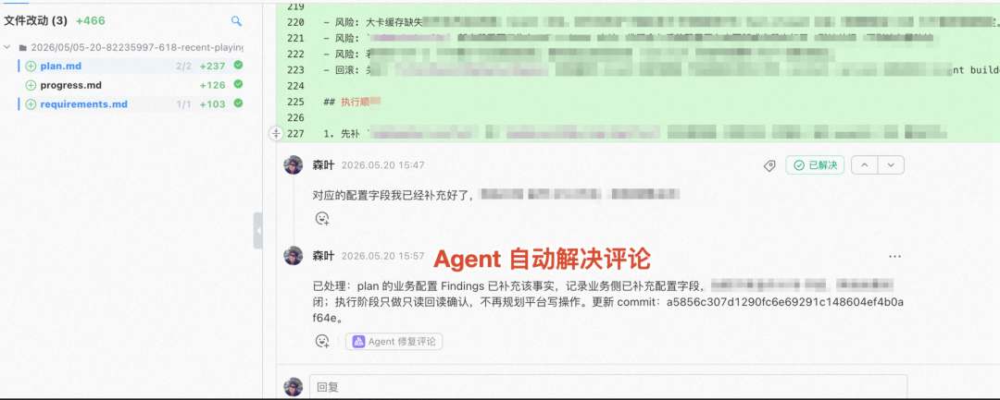
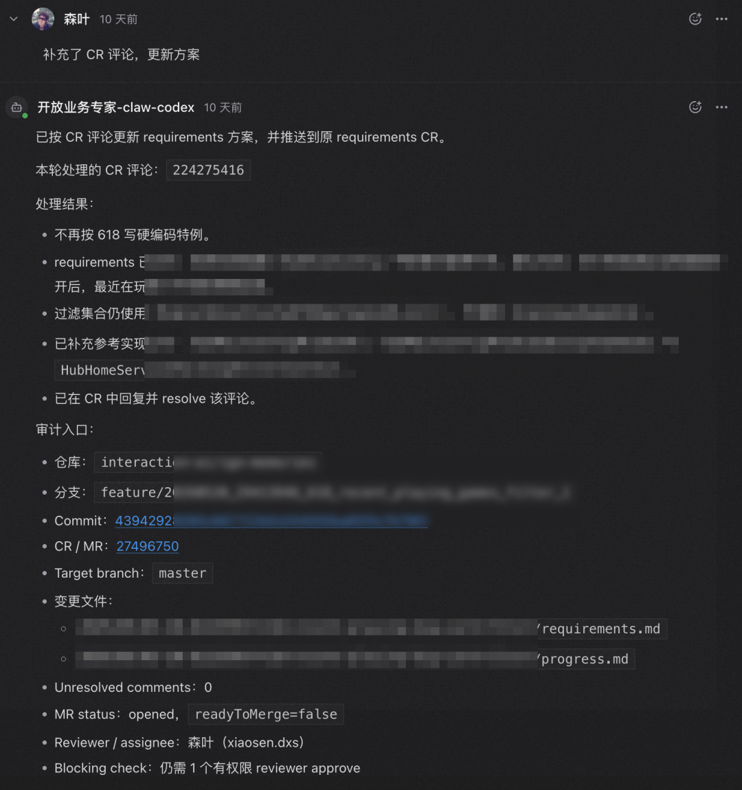
▐ 3.3 技术方案：第二质量门
** **
requirements 确认后，下一步不是直接写代码，而是先写技术方案。这是整个流程中人工确认最密集的第二处。
方案阶段要回答的不只是“怎么改代码”，而是一组更完整的问题：现状是什么、目标行为是什么、不做什么、影响范围在哪、核心改动点是什么、风险在哪、怎么验证、出问题怎么回滚。这些问题如果到了写代码的时候才暴露，返工成本就会高很多。
这里有一个容易被低估的点：方案阶段就应该把“怎么验收”定清楚。很多需求到了实现完才开始想怎么验证，结果发现验收条件不明确、配置状态没确认、边界场景没覆盖，又要回头补。所以在方案阶段，验收方式、测试策略和验证入口就应该写进 plan。
测试用例设计
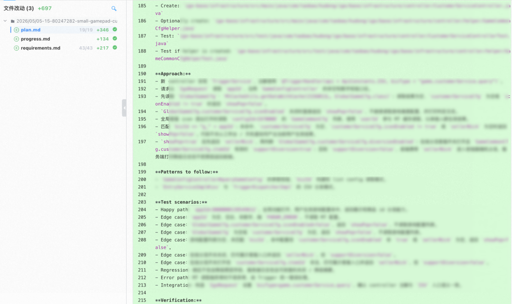
这里说的验收不只是单元测试，还包括 HSF 接口调用、SLS 日志查询、监控指标核对等真实环境验证。正面 case 和反面 case 都需要在方案阶段定好，否则到了验收环节还在临时想”到底该查什么”。
配置相关的需求尤其如此。很多业务需求会涉及天机星策略、工作台配置、开关、白名单、人群分流等。方案阶段不只是读取当前配置状态，还包括提前创建好配置的 schema、完成配置校验，并把这些信息写进技术方案文档里。这样做的好处是：实现时直接对着 schema 写代码，验收时直接对着 plan 里的验收标准逐项核对，而不是到最后才手忙脚乱地确认“这个开关到底该是什么值”。
落地时，方案编写由 superai-plan 负责，，配置取证和 schema 校验则基于天机星 CLI（tjx-cli）和工作台 CLI 已有的命令行能力，通过 superai-tjx 和 superai-mt 完成调用。技术方案同样写在项目记忆仓库的 feature 分支上，走 CR 确认。确认后的 plan 是后续实现、测试和验收的共同基准。没有确认的方案不进入编码。
效果：
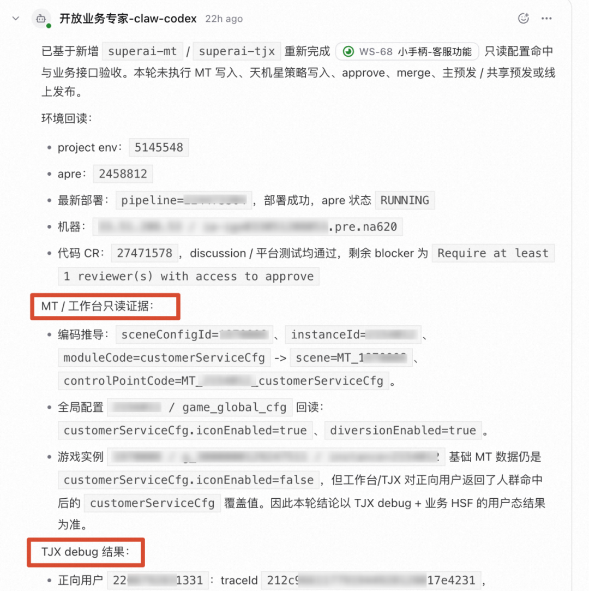
▐ 3.4 实现与内部质量门：TDD、PMD、review
进入实现阶段后，Agent 可以在已确认的 requirements 和 plan 范围内自主修改代码、补测试、提交 commit。这里最核心的一个设计决策是用 TDD 驱动实现。
为什么要强调这一点？因为 AI 写测试最常见的失败模式不是"写不出来"，而是"为了通过覆盖率而写"——先写完代码，再补一堆只验证代码能跑通的测试，本质上只是在用测试确认自己的实现，而不是用测试约束正确行为。真正有价值的 TDD 是反过来的：先根据 plan 里已经定好的验收标准和业务行为写测试，让测试定义"什么是对的"，再让实现去满足测试。这样测试才是真正的质量约束，而不是事后的覆盖率装饰。
从本地到远端之间，还有一道 Agent 自己的内部硬门禁——pre-push quality gate。这道门不需要人工确认，但 Agent 自己必须过。它主要包含三件事：
- diff-to-test 映射：每一处生产代码的行为变化都要有具体测试锚点，不能只靠“跑了一遍模块回归”证明。
- PMD / lint 检查：规则类问题由自动化工具捕获，失败就回到实现阶段修复。
- Agent 内部代码 review：PMD 通过后，再对完整待 push diff 做结构化 review，发现 actionable 问题就修、重跑、再 review。
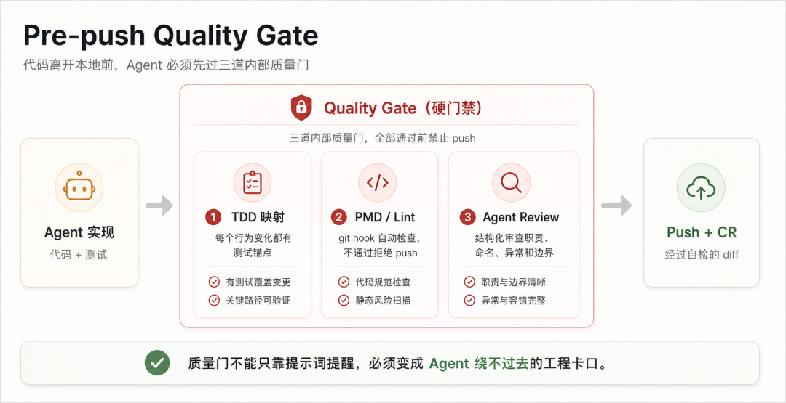
这里有一个关键的设计取舍：这些门禁不能只靠提示词约束，必须变成 Agent 绕不过去的硬规则。提示词再怎么写“push 前必须跑 PMD”，Agent 在复杂任务中还是可能跳过。所以落地时，我们通过 git pre-push hook 把 PMD 校验和单元测试覆盖率检查注入到 push 流程里——Agent 执行 git push 时，hook 会自动触发检查，不通过就直接拒绝 push。这样质量门禁就从“Agent 应该做”变成了“不做就推不上去”，是真正的工程化卡口，而不是靠提示词的自觉。
落地时，实现阶段由 superai-execute 负责编码和 TDD 推进，内部代码 review 由 superai-code-review 执行结构化检查。PMD 和覆盖率则是通过 git hook 硬绑定，不经过 skill 调度。
TDD
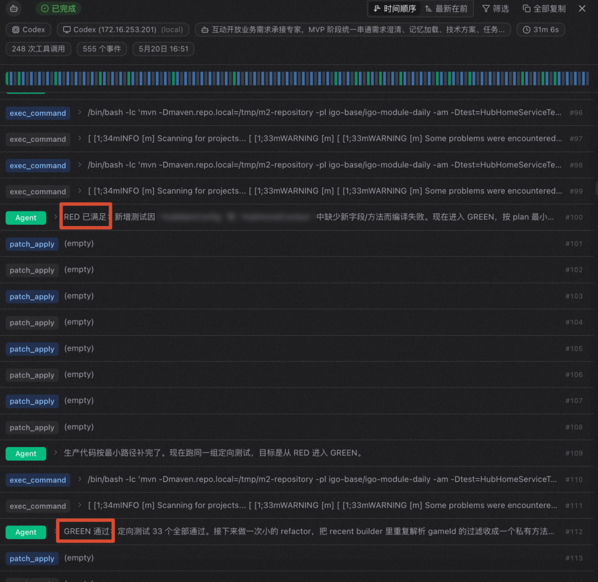
提交前自动过 PMD 校验
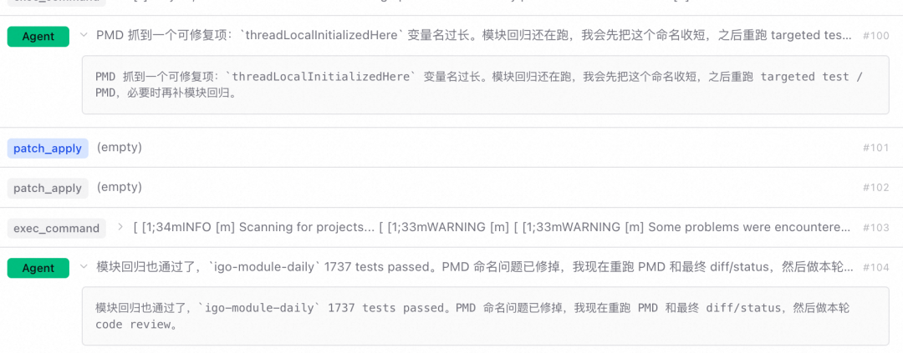
▐ 3.5 CR / Issue 协同：把人机反馈留下来
虽然这一节放在实现之后讲，但实际上评论协作从需求一进入就已经开始了，并不是代码写完才用到。
创建需求后就会拉 feature 分支，requirements 和 plan 都是先写入项目记忆仓库的 feature 分支、push 后创建 CR，然后人在 CR 上通过评论反馈。换句话说，前面 3.2 的需求澄清和 3.3 的技术方案这两个质量门，本身就是通过 CR 评论在做人机协作。而且实际跑下来会发现，评论协作最密集的阶段恰恰是澄清和方案，而不是代码实现。需求理解对了、方案确认了，到了真正写代码的时候，以现在 Agent 的能力反而不需要那么多微操。
这一步的关键不只是“让人看一下”，而是让人机之间的反馈留在可追溯的地方。Agent 会主动读取 CR 上的 unresolved 评论，按评论内容修改对应文档或代码、提交新 commit、回复并 resolve。如果评论涉及需求语义或范围变更，会回到 requirements 或 plan 阶段重新确认，而不是在当前层面硬改。
与此同时，需求推进的重大节点会通过 Aone milestone 评论回刷：澄清完成、方案确认、进入 TDD、代码完成、CR 反馈处理、验收通过。每条评论都带 commit link、CR link 和验证证据，方便后续回溯。
为什么要强调“留痕”？因为 CR 评论和 issue 对话不只是当次需求的协作工具，更是后续结项沉淀的素材。哪些澄清反复出现、哪些代码模式被反复指出、哪些人工介入本可以自动化——这些信息只有留在平台上，结项时才能被系统性地回看和分析。如果反馈只停在聊天框里，需求结束就蒸发了。
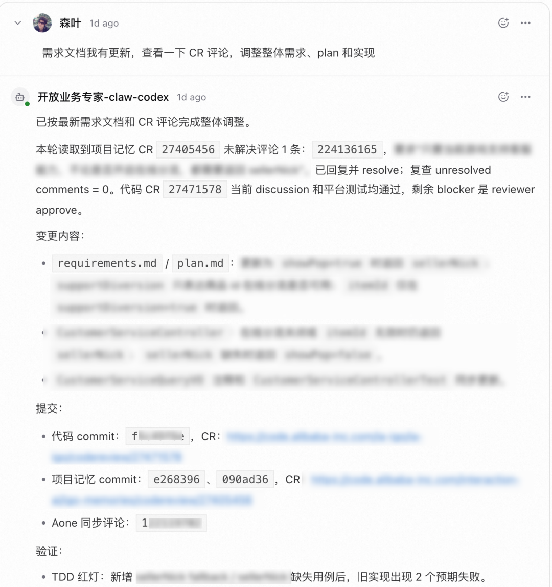
落地时，分支创建、CR 评论读写、milestone 回刷都通过 superai-aone 完成，底层基于 a1 CLI。选择锚定 Aone 是因为它本身已有钉钉群绑定和状态推送——Agent 做评论和回刷，团队在钉钉群里就能直接收到通知，不需要额外关注新的协作渠道。
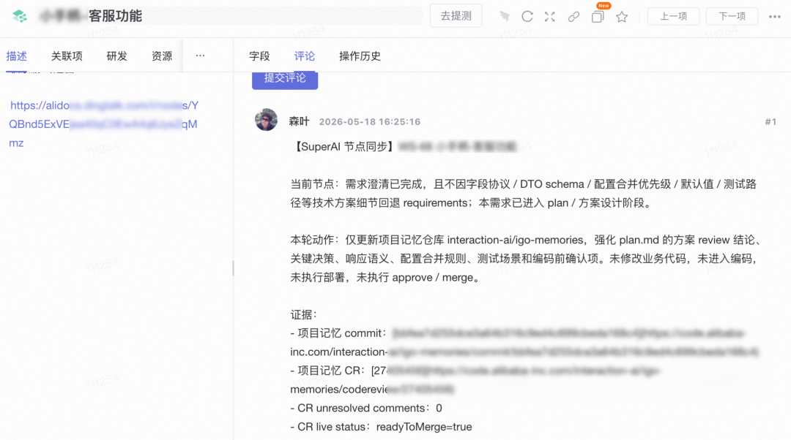
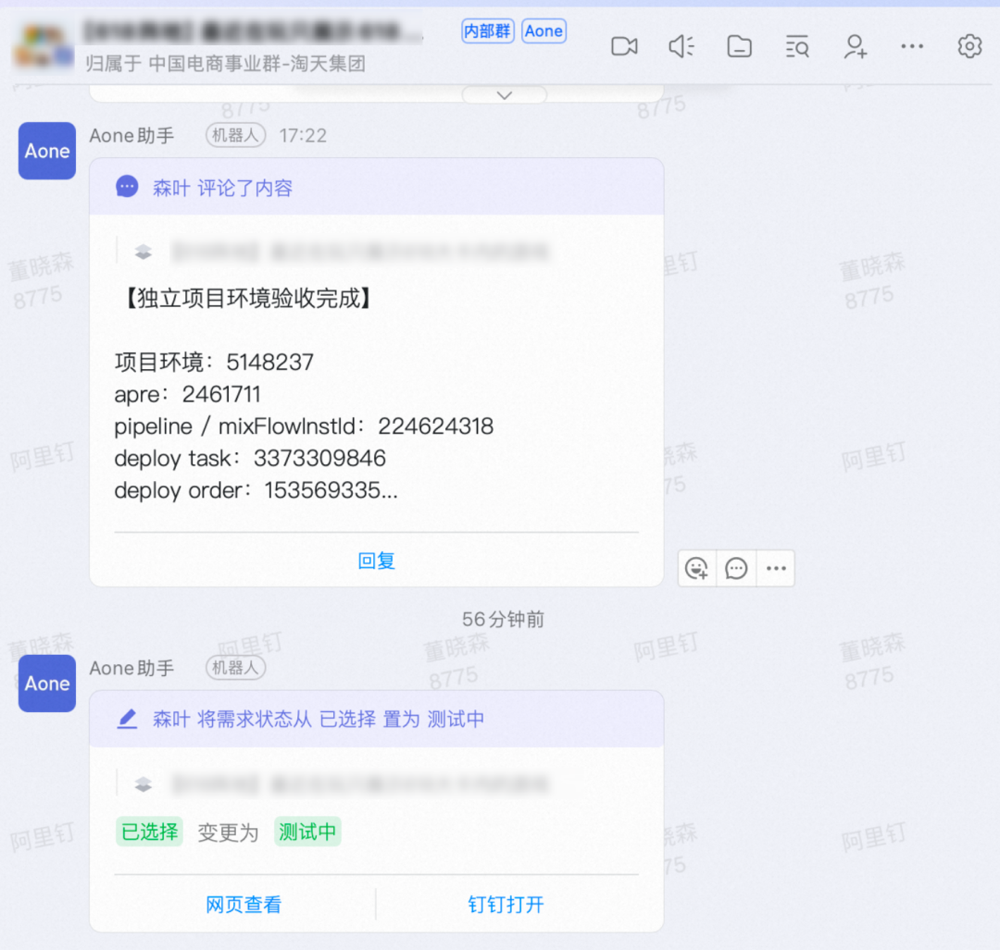
▐ 3.6 验收验证：让 Agent 用真实证据确认结果
单元测试通过不等于业务做对了。这一步要解决的是：用真实环境里的真实证据证明需求被正确实现。
落地方式是通过独立项目环境验证，而不是直接在共享预发上跑。Agent 会创建或复用独立的项目环境，把当前 feature 分支部署上去，然后通过 HSF 泛化调用验证业务行为、通过 SLS 查询验证日志输出、通过监控或 Sunfire 验证运行时指标。
验收标准来自 requirements 和 plan 里已经约定的验收条件，至少要覆盖三类：
- 正例：核心业务场景是否按预期工作。
- 反例：边界条件和异常路径是否被正确处理。
- 回归：改动是否影响了不应该变化的行为。
这一步的价值在于让验收从“人肉点一下看看”变成“Agent 用可回读的证据证明结果”。验收证据写入 progress 或 verification 文件，后续 CR 审阅和结项时都可以引用。
当然，这里还有一道人工确认门：独立环境验收通过后，进入主预发或线上发布之前，仍然需要人工确认。Agent 不会自动执行主预发部署或线上发布。
落地时，独立项目环境的创建和部署通过 superai-aone 基于 a1 CLI 完成，SLS 日志查询由 superai-sls 负责，HSF 泛化调用和监控指标核对由 superai-ops 负责。这些 skill 调用的都是平台已有的命令行工具和 API，Agent 不需要登录任何 Web 页面。
需求澄清+技术方案确认后基本可以做到自动化推进到部署验收
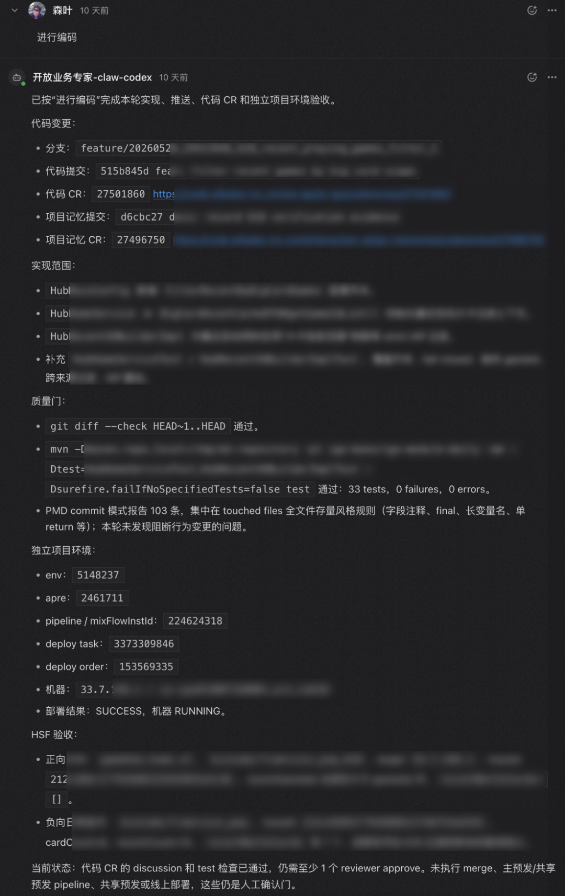
▐ 3.7 发布与变更观察：上线不是流程终点
验收通过、人工确认发布后，需求并没有结束。发布本身需要变更材料、风险评估和回滚预案，这些由 Agent 协助准备，但发布动作仍由人工确认和执行。
更重要的是发布后的观察。SLS、HSF、监控这些能力不只是验收阶段用一次，发布后同样需要回读日志、检查运行时指标、确认业务行为与预期一致。如果出现异常，观察期内发现的问题同样会进入结项复盘的素材。
这一阶段的设计原则很简单：上线是需求交付的一个节点，不是终点。 只有观察期无异常，才算真正可以进入结项。发布后的日志和监控回读复用验收阶段的 superai-sls 和 superai-ops，不需要额外引入新工具。
效果： 不过这次排查到的问题并不是本次发布引起，是 iGraph 本身抖动导致
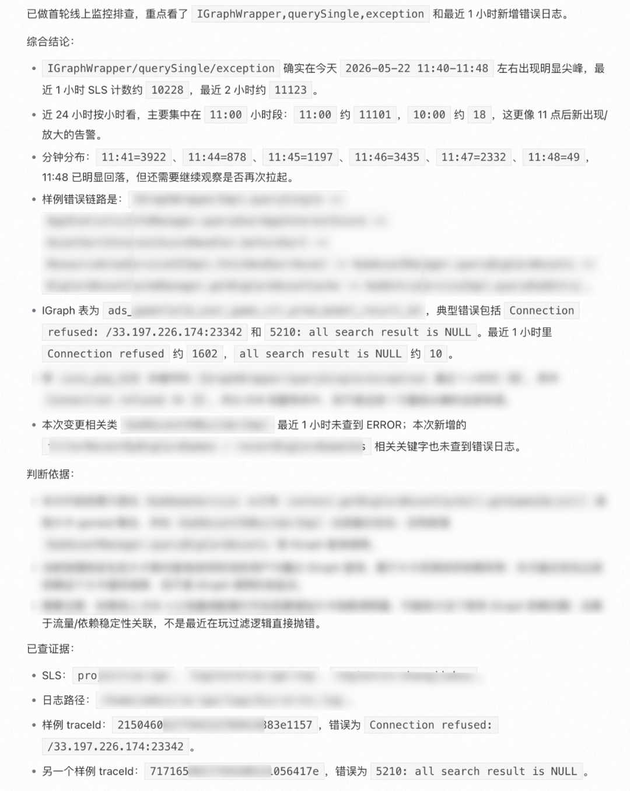
▐ 3.8 结项沉淀：让下一次需求更少依赖人工
这一步呼应 3.1 里那张记忆生命周期图的右侧：需求过程中积累的项目记忆，在结项时完成选择性蒸馏。
结项不是写一句“已完成”。它的核心是回看整个需求过程，回答三个问题：
- 哪些知识是稳定的：业务规则、系统边界、验收规范、排障经验——这些是下一个类似需求不需要重新学的东西。稳定知识通过 CR 确认后进入长期 wiki 和 codemap。
- 哪些流程可以改进：Agent 在哪个环节犯了错、走了弯路、被人工反复纠正——这些是 skill 和提示词的迭代候选。如果某个问题在多次需求里反复出现，就不应该继续靠人盯着。
- 哪些材料只需要归档：一次性的实现细节、临时调试记录、中间状态——不需要进入长期知识，留在 closeout raw log 里作为审计底稿。
落地时，Agent 会先生成一份 closeout raw log，按分类列出所有过程材料和蒸馏判断。然后分别准备长期 wiki 的写入候选和 skill / 提示词的改进候选，每一类都需要人工确认才真正写入。项目记忆的 feature 分支在结项时合并回主干，长期 wiki 的变更通过独立 CR 审阅。结项入口由 superai-finish 负责编排，项目记忆收口和长期 wiki 候选生成则由 superai-memories 完成。
这个过程完成后，3.1 里描述的闭环就真正合上了：结项蒸馏出的稳定知识回到长期 wiki，成为下一个需求进入时的「长期业务知识」背景拉取来源。每做一个需求，Agent 理解业务的基线就高一点，人需要解释的上下文就少一点。
结项审计表格
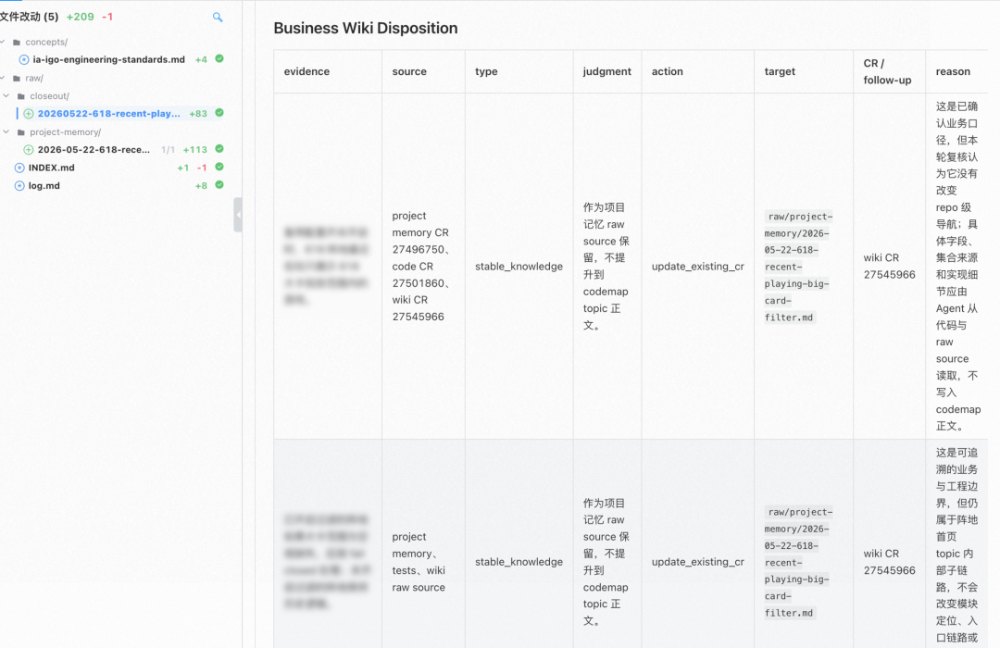
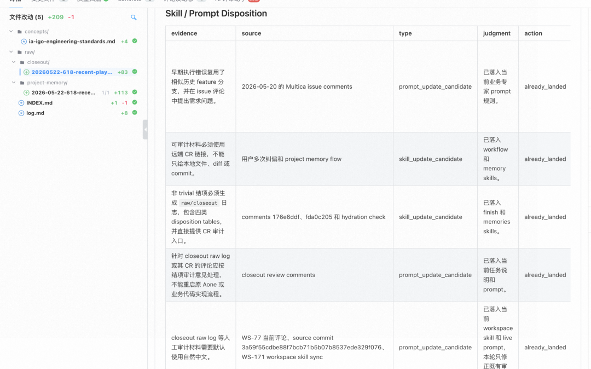

现有问题与后续规划
▐ 4.1 接入成本还需要降低
当前 Agent 的首次接入成本偏高，主要在鉴权和运行时初始化环节。集团内不少平台工具还只支持网页授权登录，没有对 Agent 的命令行沙箱环境做好适配。这是一个过渡态问题，随着各平台补齐 CLI / API 层面的鉴权能力会自然缓解。
▐ 4.2 缺少 Agent 效果的度量体系
前面讲了 Agent 在结项时会把流程改进候选沉淀到 skill 和提示词里，形成自我迭代。但一个更根本的问题是：怎么知道这些迭代改进是真的有效？
目前还缺少一套系统化的度量体系来回答这个问题。至少需要能观测到几个维度：
- 人力投入：人工介入次数、评论轮次、人工修正比例是不是在下降。
- 需求质量：方案返工率、验收一次通过率是不是在提升。
- 线上稳定性：上线后的问题数、回滚次数是不是在减少。
- 协作效率：Aone 和 Multica 双事实源之间的同步成本、跨平台信息丢失率是不是在可控范围内。
有了这样的度量基线，才能判断每一轮 skill / 提示词迭代到底是改进还是退化，Agent 的自我成长才有据可循，而不是靠感觉。
▐ 4.3 从单 Agent 走向 Agent Team
目前整个闭环还是一个单 Agent 在后端内部跑通的模式。对于纯后端需求来说，单 Agent 已经够用了——前面展开的从上下文组织到结项沉淀的完整流程，一个 Agent 可以端到端串下来。
但长期来看，这个模式一定需要扩展。一个典型的场景是前后端协同开发的复杂需求：前端需要一个 Agent 负责页面交互和组件实现，后端需要一个 Agent 负责接口和业务逻辑，测试需要一个 Agent 从端到端的视角做集成验证——而不是像现在这样只从后端视角做接口级的调用测试。这些 Agent 之上，还需要一个队长角色负责需求拆解、任务派发和进度协调。
而且这个 team 的边界不只是前后端和测试。往上游看，需求产出本身也可以纳入：一个 PD Agent 负责生成 PRD、梳理业务规则、输出验收标准，它同样共享长期 wiki，了解过去的技术方案和业务需求历史。这样一来，前面 3.2 里人工介入最密集的需求澄清环节，就可以变成 PD Agent 与业务专家 Agent 之间的直接对齐，人只需要在关键歧义处做最终裁决，而不是全程逐条解释业务背景。
往平行领域看，同样的端到端链路也已经在数据方向开始试点。一个数据专家 Agent 采用和后端 Agent 相同的方法论——上下文组织、方案确认、TDD 实现、验收取证、结项沉淀——但专注于离线数据开发、报表生成和数据分析。它验证了一件事：这套框架不是只能用在后端编码上，而是可以被不同领域的 Agent 复用的通用研发流程。
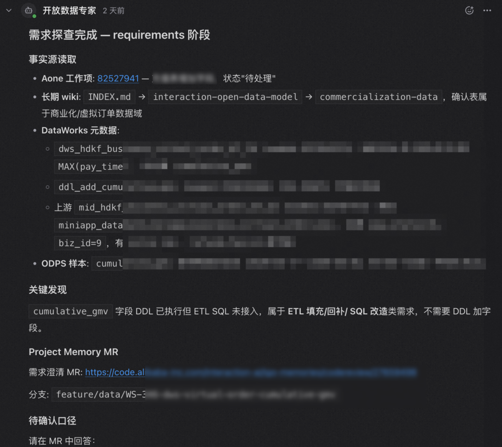
这个 team 模式的关键设计约束是 共享长期 wiki，各自维护视角 。所有 Agent 共享同一份长期业务知识，保证对业务理解的一致性；但每个 Agent 从整体需求中只拆解出跟自己职责相关的部分，各自维护自己的 requirements、plan 和过程产物。队长负责把各方产物对齐，确保前后端接口契约一致、测试覆盖完整。
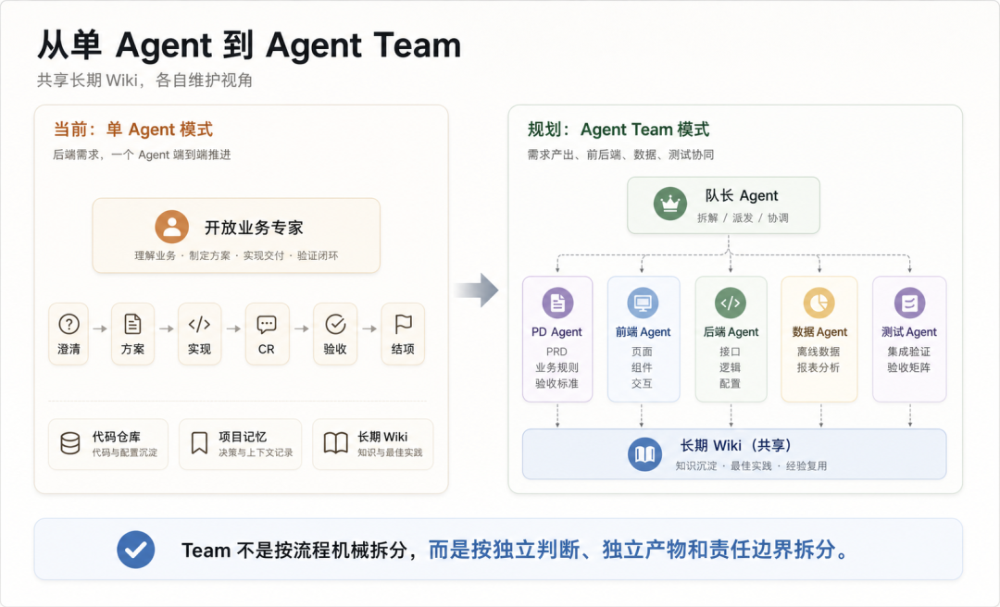
这是接下来最重要的规划方向之一。不过 Agent 拆分不应该按流程步骤机械切分，而应该看是否真的存在独立判断、独立产物、并行执行和责任隔离的需要。在还没有足够多的真实复杂需求验证之前，不急于提前铺设。

结语
回过头看，这套系统做的事情可以用一句话概括：把一个业务需求从进入到结项的完整过程，组织成 Agent 能自主推进、人只在关键节点确认的闭环。
它现在还远谈不上完善——接入成本、度量体系、多 Agent 协作都是摆在前面的问题。但已经跑通的这条链路证明了一件事：需求研发过程中大量重复的上下文组织、工具调用、取证验证和经验回收，确实可以被系统化地交给 Agent，而不是每次都靠人脑记忆和手动串联。
更重要的是，这套实践背后隐含着一个协作模式的转变：人不应该继续在每个需求里反复补位，而是把这些补位动作沉到系统里。Agent 缺上下文，就补知识和项目记忆；缺能力，就补工具接口；流程容易跑偏，就补确认门和质量门；反馈容易丢失，就补评论、验收和结项沉淀。只有这些工作条件被系统化，需求交付才不会继续卡在人身上。
也许真的会有一天，PD 提完需求之后，就能直接交给对应的业务 Agent 去研发、验收和上线。

团队介绍
本文作者森叶，来自淘天集团-用户&内容技术团队。团队聚焦淘宝用户运营与互动场景，负责淘金币、芭芭农场、红包签到、开放游戏及大促互动等业务，持续建设面向亿级用户的高并发、实时互动与稳定性能力。同时，团队探索 Agent、领域建模、数据评测与智能研发在业务中的应用，推动互动玩法高效落地和运营策略持续优化，为用户提供更有趣、更可靠的消费体验。
¤ 拓展阅读 ¤
归属：[[02-输入/按主题/AI与效率/_index|AI与效率]]